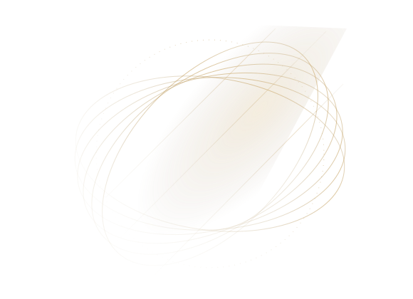
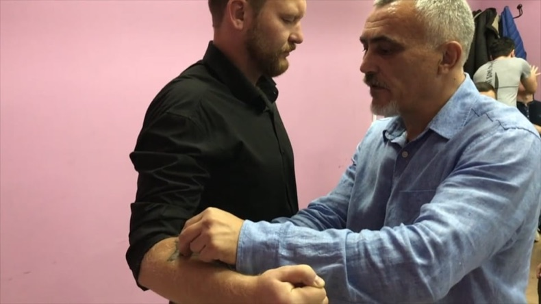
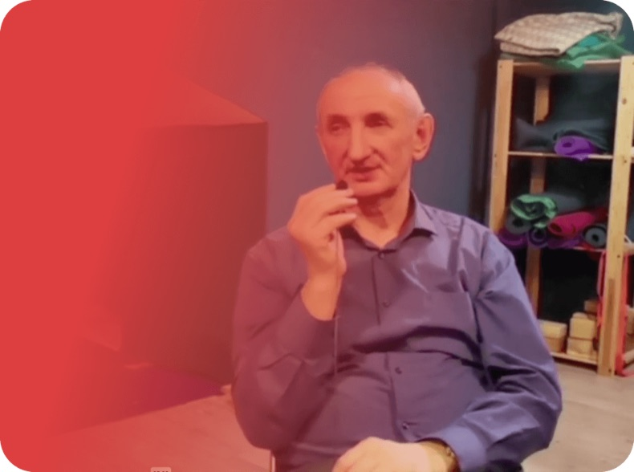
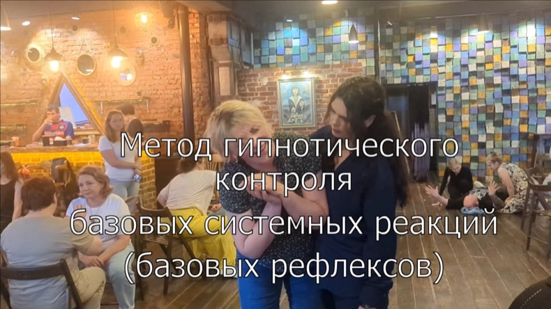
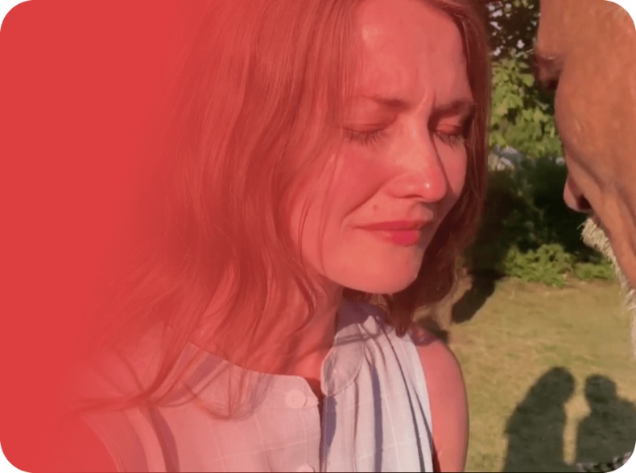
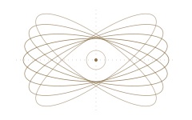
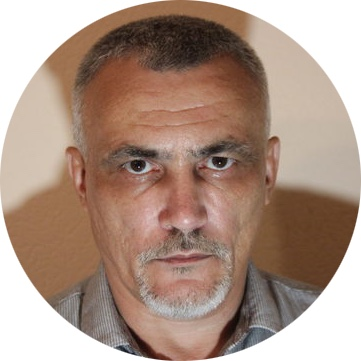

Психологам и консультантам
Чтобы познакомиться с гипнотическими подходами в работе с запросом клиента.
Профессиональное обучение · Москва
Очный тренинг «Все виды гипноза и гипнотерапии» по Системе Неформальной Гипнотизации
Философия обучения
Мастерство начинается с наблюдения. На тренинге участники учатся замечать изменения в речи, внимании и реакции собеседника.
Во время упражнений участники поочерёдно ведут и наблюдают сессию. Разбор помогает увидеть, как одна и та же индукция воспринимается разными людьми.
Преимущества СНГСистема Неформальной Гипнотизации объединяет принципы разных школ гипноза, теоретические концепции и авторские разработки в единую методологию.
На учебных сессиях специалист учится осознанно выбирать, сочетать и адаптировать методы под запрос человека и ход работы.
Караимский метод. Участник пробует вести индукцию, находясь в гипнотическом состоянии. Авторы используют упражнение для развития рабочего состояния гипнотизёра.
Серия повторений с ограничением по времени. Участники переключаются между знакомыми индукциями и отрабатывают скорость и уверенность.
Упражнения на сохранение внимания и рабочего состояния при помехах. Подробности формата следует уточнить у преподавателей.
Работа над голосом, ритмом, интонацией и метафорами. Участники учатся формулировать внушения в своей манере.
Задолго до появления научной психологии человечество использовало ритуалы, символы, внушение и различные способы изменения состояния сознания.
На обучении мы рассматриваем магические, эзотерические и традиционные целительские практики с позиции психологии и гипноза. Исследуем роль суггестии, внимания, ожиданий, воображения и эмоциональных состояний в подобных практиках.

Не обучение магии, а понимание её психологических механизмов.
Раздел подходит специалистам эзотерических, духовных, телесных и медитативных практик, которые хотят лучше понимать, что происходит с вниманием, ожиданиями и переживаниями участников.
Статья организатора о гипнозе и ритуалахТренинг изнутри
Посмотрите, как преподаватели показывают индукции и как участники отрабатывают их в группе.
Больше записей
Кому подойдёт
Чтобы познакомиться с гипнотическими подходами в работе с запросом клиента.
Чтобы разобраться в механизмах гипноза и увидеть, как отличаются модели гипнотерапии.
Чтобы пройти путь от теории и базовой индукции до учебной сессии с обратной связью.
Цели обучения
Применять речевые и невербальные подходы, замечать реакцию партнёра и менять ход упражнения.
Проводить беседу о запросе и подбирать подход в рамках учебного сеанса гипнотерапии.
Развивать темп, голос и индивидуальную манеру. Практиковать работу в парах, тройках и группе.
Виды гипноза
В классическом подходе участники отрабатывают роль ведущего, голос и последовательность индукции через прогрессивную релаксацию.
На занятиях разбирают индукцию Элмана и переход между этапами. Практика в парах помогает отследить реакцию партнёра и скорректировать ведение.
Косвенные формулировки, метафоры и изменение фокуса внимания. В упражнении важно подбирать речь к реакции клиента.
Жест, взгляд, позиция, темп и другие невербальные элементы. На тренинге изучают сочетание этих элементов с речевыми индукциями.

СНГ рассматривает гипнотизацию в рамках текущей коммуникации. В программе разбирают индукцию, провокацию гипнотического состояния и сочетание этих подходов.

В учебной сессии внимание уделяют тому, как действия специалиста связаны с согласованным запросом. Посмотреть инструментарий гипнотерапии.
Формат обучения
Около 15 учебных дней, включая самостоятельную подготовку и очные занятия.
Видеолекции и демонстрации высылают заранее. На самостоятельное изучение рассчитано примерно шесть дней. В Москву вы приезжаете уже с теоретической базой и девять дней посвящаете отработке навыков.
Ведущий показывает упражнение. Участники меняются ролями в парах и тройках, задают вопросы и разбирают сложности.
Отработка беседы о запросе, ведения индукции, применения выбранной модели и завершения сеанса.
В последние три дня можно пригласить своих клиентов и знакомых и с их согласия поработать с ними на практике. Доступны занятия в помещении и практика за пределами аудитории.


Программа тренинга
9 дней очной практики · Москва, 4–12 января 2027 года
6 дней теории онлайн до начала очных занятий.
Задать вопрос
Формирование практического навыка гипнотизации, свобода выбора методов и подготовка к освоению гипнотерапии.

Расширение терапевтического инструментария и развитие способности выбирать, сочетать и адаптировать методы под индивидуальный запрос.

Опыт применения изученных методов в реальных ситуациях в условиях профессиональной поддержки.
Осваиваются на протяжении всего тренинга.
Преподаватели

Психолог, гипнотерапевт
Соавтор СНГ. Занимается применением неформального гипноза в психокоррекции и в разных коммуникативных контекстах.

Ректор МАГИС им. В. М. Бехтерева
Психолог, гипнотерапевт, соавтор СНГ. Специализируется на невербальном гипнозе и изучает применение гипноза в традиционных практиках.

Автор СНГ
Автор программ профессиональной переподготовки, в том числе по психологии со специализацией «Когнитивно-психосоматическая гармонизация».
Разбор гипнотических приёмов в разных контекстах.

Отзывы
Участники рассказывают о своём опыте обучения. На сайте СНГ собраны другие видео и письменные отзывы.
Читать и смотреть отзывы
«Для меня всё новое. Я в восторге!»
«Много знаний. Много практики. Всё понятно и доступно для каждого».
Профессиональная переподготовка
Для участников полной программы возможность получения диплома входит в стоимость при соблюдении условий переподготовки.
Условия и документы на сайте организатораОконченное среднее профессиональное или высшее образование. Если вы ещё учитесь, после курса выдаётся справка. Диплом можно получить после завершения основного образования.
Паспорт, документ о среднем профессиональном или высшем образовании, СНИЛС.
Об академии
Тренинг проходит в рамках программы Московской академии гипноза и суггестии имени В. М. Бехтерева.
На странице программы указана образовательная лицензия № 042064, приказ от 19 апреля 2022 года № 510Л. ИНН академии 9723117991.
Реестр образовательных организаций МосквыУсловия участия
4–12 января 2027 года · Москва
В стоимость входят видеолекции и демонстрации для самостоятельной подготовки и девять дней очной практики. Участники полной программы могут получить диплом при соблюдении условий переподготовки.
Полная программа
175 000 ₽
Бронирование фиксирует цену. Материалы открываются после полной оплаты. Оплата оформляется на сайте организатора.
Тренинг начинается с классической, элмановской и эриксоновской индукций. Теорию можно разобрать заранее. Условия поступления на полный курс уточняет организатор.
Видеолекции и демонстрации высылают заранее после полной оплаты. На самостоятельное изучение предусмотрено примерно шесть дней.
По программе участник может вместо выездной практики продолжить занятия гипнозом и гипнотерапией в помещении.
Да. В последние три дня тренинга, с 10 по 12 января, можно пригласить своих клиентов и знакомых и поработать с ними на прикладной практике с их согласия.
Необходимы полный тренинг, оконченное среднее профессиональное или высшее образование, паспорт, диплом об образовании и СНИЛС. Если вы ещё учитесь, по окончании курса выдают справку, а диплом можно получить после завершения основного образования.
Организатор указывает предоплату 30 000 ₽ для бронирования, полную оплату и рассрочку на 6 месяцев. Подробности доступны на странице записи.
В анонсе указана Москва. Адрес площадки уточняйте у организатора по телефону или в Telegram.
4–12 января 2027 · Москва